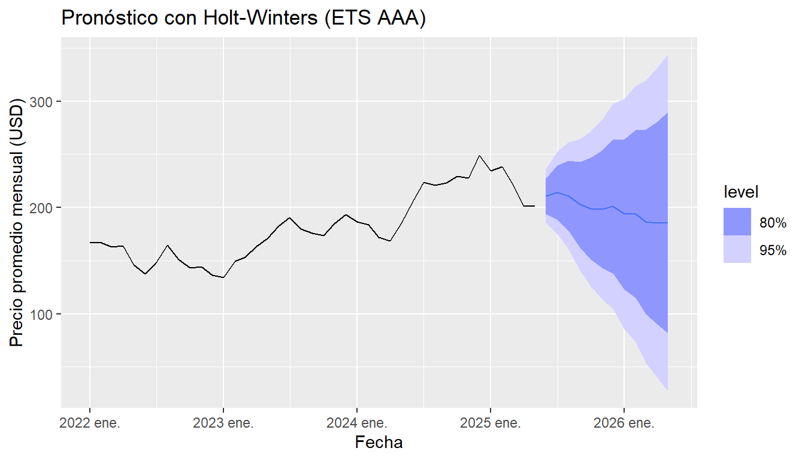

Chapter 7 Módulo 2 - Unidad 1 · Holt-Winters y suavizamiento exponencial
7.1 Hot-Winters
En esta sección se implementará el modelo de Holt-Winters para realizar un pronóstico de la serie temporal mensual del precio ajustado promedio de una acción, utilizando el enfoque ETS (Error-Trend-Seasonal) con componentes aditivos. El modelo de Holt-Winters es una técnica de suavizamiento exponencial que permite capturar tres características esenciales de las series temporales: la tendencia (variación sistemática a lo largo del tiempo), la estacionalidad (patrones que se repiten en intervalos regulares) y el nivel (valor base actual de la serie). Esta metodología es especialmente útil para datos que presentan fluctuaciones estacionales y tendencias definidas, como ocurre en los precios de acciones, y se emplea aquí para generar pronósticos a corto plazo (12 meses), proporcionando además intervalos de confianza que reflejan la incertidumbre del modelo.
Criterios de Interpretación
La línea azul representa el pronóstico de Holt-Winters para los próximos 12 meses.
Las bandas sombreadas indican el intervalo de confianza al 95 %, mostrando los posibles rangos de precios.
Si el patrón estacional se repite como en años anteriores, el modelo captura sus efectos y los extiende hacia el futuro.
Las tendencias recientes (ascenso a partir de 2023) son extrapoladas de manera moderada según el suavizamiento del modelo.
# Librerías necesarias
library(fable)
library(fabletools)
library(tsibble)
library(tsibbledata)
library(dplyr)
library(ggplot2)
# Asegurarse de que precio_mens (mensual) está definido como tsibble
precio_tsibble <- precio_mens %>%
as_tsibble(index = mes)
# Aplicar modelo Holt-Winters (ETS con estacionalidad aditiva)
modelo_hw <- precio_tsibble %>%
model(HW = ETS(precio ~ error("A") + trend("A") + season("A")))
# Generar pronóstico a 12 meses
pronostico_hw <- modelo_hw %>%
forecast(h = "12 months")
# Visualizar pronóstico
autoplot(pronostico_hw, precio_tsibble) +
labs(title = "Pronóstico con Holt-Winters (ETS AAA)",
x = "Fecha", y = "Precio promedio mensual (USD)")
7.2 Interpretación de los resultados
El gráfico presenta el pronóstico del precio promedio mensual de una acción utilizando el modelo Holt-Winters (ETS AAA), que incluye componentes aditivos para el error, la tendencia y la estacionalidad. La línea negra representa la serie histórica observada, mientras que la línea azul proyecta los valores esperados para los próximos 12 meses. Las bandas sombreadas indican los intervalos de confianza al 80 % y 95 %, proporcionando una estimación de la incertidumbre asociada al modelo. Se observa que el precio tiende a estabilizarse en el corto plazo, con una leve tendencia descendente, aunque dentro de un rango de alta dispersión, lo que evidencia la volatilidad inherente a este tipo de activos. A mayor distancia en el tiempo, las bandas se ensanchan, reflejando el aumento de la incertidumbre en las proyecciones futuras. En conjunto, el modelo sugiere cautela, ya que si bien el valor central proyectado es moderadamente estable, existe una amplia posibilidad de variaciones significativas.